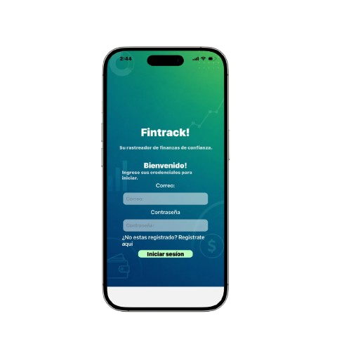
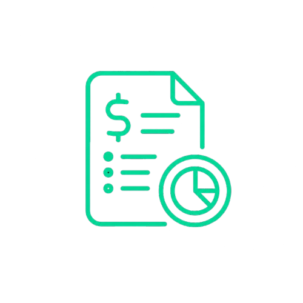
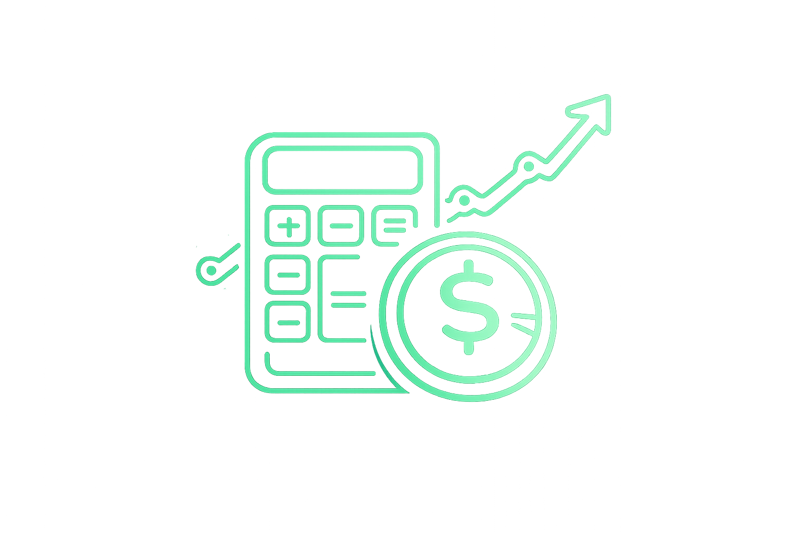
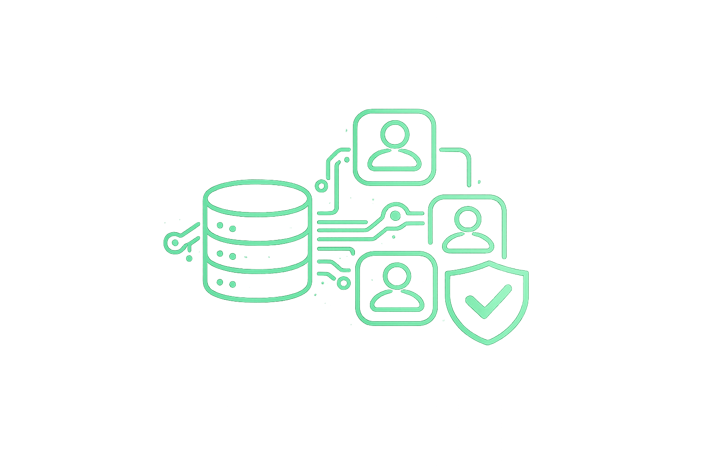

Controla tu dinero , no al revés.
Fintrack te da una visión completa de tus finanzas personales - gastos - ingresos desde tu bolsillo.

CARACTERÍSTICAS
Todo lo que necesitas para dominar tus finanzas.
Diseñado para que tomar el control de tu dinero sea tan natural como revisar tu teléfono por la mañana.

Registro de ingresos y gastos por categoría
No solo anotas un monto — cada movimiento se clasifica (nómina, freelance, inversión, otros para ingresos; comida, vivienda, servicios, salud, ocio, otros para gastos). Eso le da a la app una estructura de análisis que muchas apps simples de "gasto rápido" no tienen.

Saldo calculado en tiempo real.
El saldo no es un número que se guarda y se edita directamente — se calcula a partir del historial real de movimientos, lo que da consistencia: siempre refleja la suma real de tu actividad, no un valor que se pueda desincronizar fácilmente.

Arquitectura multiusuario real
Cada usuario tiene su propio id, su propia sesión, y todos los movimientos quedan aislados. Esto significa que la app está lista para escalar a muchos usuarios sin mezclar datos entre cuentas — no es un prototipo de un solo usuario.
CÓMO FUNCIONA
En marcha en menos de 3 minutos.
Crea tu cuenta
Registrate en segundos con tu correo electronico. No solicitaremos tus datos bancarios!
Comienza a registrar tus movimientos
Con nuestro menu intuitivo seras capaz de registrar rapidamente ingresos y gastos!
Toma el control
Visualiza y analiza de manera rápida y ordenada los porcentajes de tus movimientos por categoria y tu saldo disponible actual en tiempo real.
Conoce Fintrack!
Descarga gratuita
EMPIEZA HOY.
GRATIS, PARA SIEMPRE
Sin costos ocultos. Sin tarjeta requerida. El plan gratuito de FinTrack cubre todo lo que necesitas para empezar a tomar el control de tus finanzas ahora mismo.